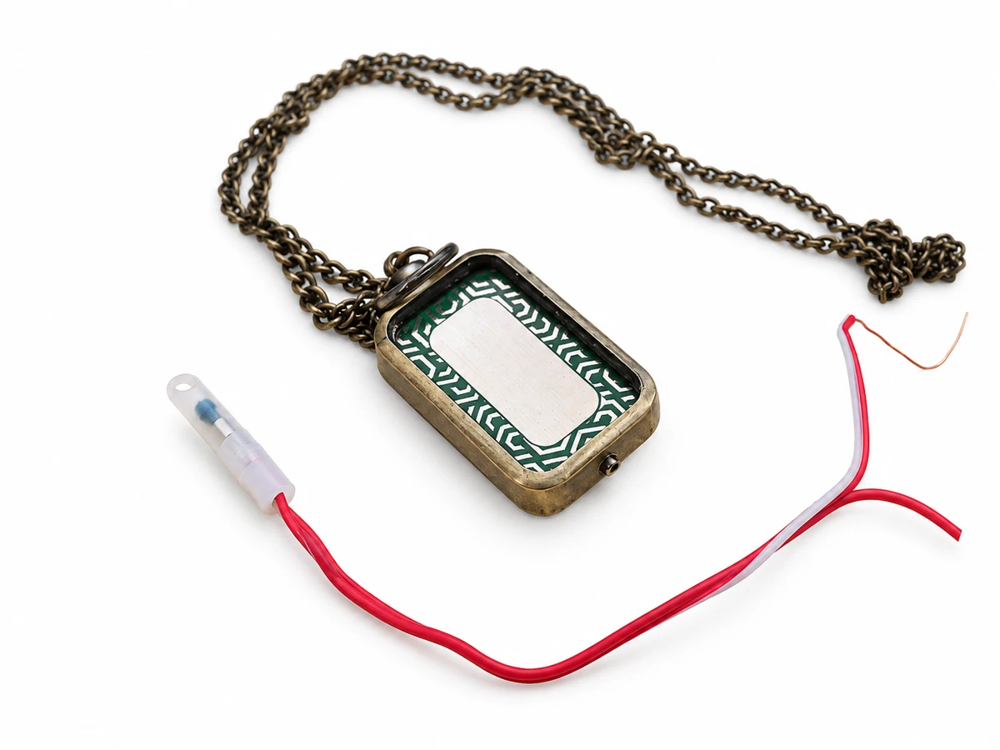
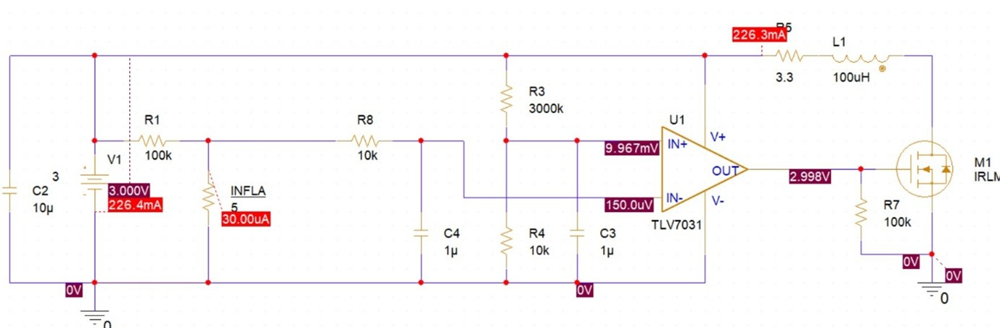
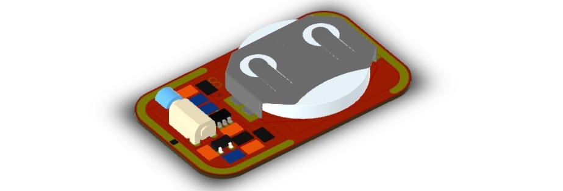
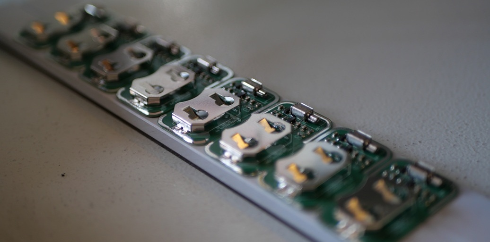

Développer un testeur électrique compact adapté aux contraintes du terrain.
SPICEEAGLEBasse consommationEncapsulation

Photographie du prototype retouchée.Le besoin
Contrôler la continuité d’un inflammateur avec un courant de test très faible.
L’intervention
Simulation, conception électronique, intégration mécanique et assemblage des prototypes.
Le résultat
Une première série de dix unités pour vérifier le processus de fabrication et poursuivre les essais.
Besoin et contraintes
Les inflammateurs pyrotechniques (ou “infla”) sont de petits composants conçus pour déclencher une charge explosive lorsqu’un courant électrique précis les traverse. Ils sont utilisés dans les effets spéciaux, le BTP (tir de mine, démolition contrôlée), ou encore dans des systèmes de sécurité ou militaires.
Avant leur utilisation, il est essentiel de vérifier leur bon état électrique, c’est-à-dire s’assurer que la continuité du circuit est toujours assurée. Cette vérification consiste à envoyer un courant très faible entre les deux bornes de l’infla pour mesurer la présence d’un chemin conducteur.
Le courant injecté pendant le contrôle doit être compatible avec l’inflammateur testé. Le projet vise donc un courant de mesure très faible ; cela ne dispense pas de la qualification de l’ensemble.
L’objectif était donc de créer un appareil :
courant de test très faible,
compact et robuste (chocs, humidité),
simple à utiliser sur le terrain, même avec des EPI,
consommation réduite en veille,
et low-cost, avec un coût de production inférieur à 10 € par unité.
Conception et architecture
Simulation
Le circuit a été simulé sous SPICE avec un objectif de courant de test inférieur à 30 µA.
La consommation en veille visée est inférieure à 5 µA sur une pile CR2032. La durée de fonctionnement dépend de l’usage, de la capacité utilisable de la pile et des conditions de stockage.
Un comparateur à très faible consommation constitue le cœur du circuit. Un fusible est intégré à la protection électrique.

Simulation du courant de test sous SPICE
Le format médaillon comporte deux zones de contact pour le test. Le capot en laiton est usiné, puis soudé sur le PCB.
La géométrie a été étudiée pour une manipulation à une main, y compris avec des gants.
Un retour par vibration signale la continuité, pour une utilisation avec des équipements de protection ou dans un environnement lumineux et bruyant.
La carte électronique a été conçue sous EAGLE :

Conception électronique sous Eagle
Réalisation et intégration
Une première série de dix unités a été assemblée pour vérifier la fabrication et poursuivre les essais terrain. Les boîtiers ont été usinés par un partenaire.
Les circuits imprimés sont fabriqués par un sous-traitant, puis les composants sont assemblés chez Orbivia avec une machine de placement.
L’électronique est encapsulée dans une résine pour limiter son exposition à l’humidité.

Assemblage et encapsulation des PCB du testeur LUXOHM
Essais et validation
Des mesures sur plusieurs modèles d’inflammateurs ont donné un courant de test inférieur à 30 µA. Les protocoles et relevés détaillés ne sont pas publiés sur cette page.
Les essais de manipulation ont inclus le port de gants, l’humidité, les vibrations et les chocs. Cette présentation ne constitue pas une qualification de sécurité du produit.
Les essais terrain visent à évaluer la robustesse du produit lors de cycles d’utilisation répétés et à recueillir les retours des utilisateurs en complément des essais sur banc.
Crédit photo : Luxfactory
Essais terrain du système LUXOHM lors d’un feu pyrotechnique
Résultat et prochaines étapes
Les dix premières unités servent à vérifier la fabrication et à poursuivre les essais avant une éventuelle série suivante.
Un projet similaire ?
Parlons de votre besoin.
Une idée, une difficulté technique ou un prototype à faire évoluer.